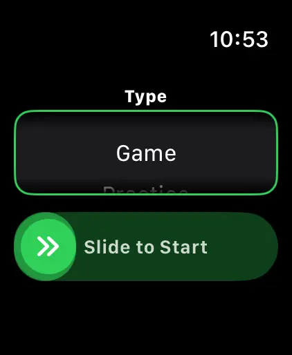
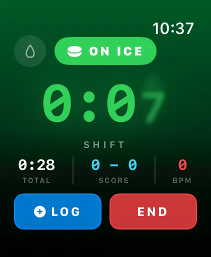

Ice Time Track
하키 시프트 운동 트래커
Apple Watch로 아이스타임 자동 추적. 이제 장비 관리와 스케이트 연마 알림까지. 경기 후 시프트·통계·건강 데이터를 확인하세요.
App Store에서 다운로드
앱 정보
당신의 시프트. 자동으로 추적.
Ice Time Track은 Apple Watch를 사용해 스케이팅 중인지 벤치에 있는지 감지합니다. 버튼 조작 없이, 번거로움 없이. 세션을 시작하고 플레이만 하세요.
작동 방식
모션 감지 알고리즘이 가속도계, 자이로스코프, GPS 데이터를 분석해 스케이팅과 휴식을 구분합니다. iPhone은 실시간 업데이트를 동기화해 경기 중이나 후에 통계를 확인할 수 있습니다.
기능
- 자동 시프트 감지, 모션 및 건강 지표 추적
- 총 아이스타임 및 시프트별 상세 내역
- 경기 기록 – 골, 페널티, 인터미션
- 시프트별 심박수 및 칼로리
- 아이스/벤치 패턴 비주얼 타임라인
- 트렌드가 포함된 세션 기록
- 각 링크 위치 태깅
- 경기, 연습, 스크리미지 모드
- 선택적 햅틱 알림
- CSV 또는 JSON으로 데이터 내보내기
APPLE 통합
Apple Watch와 작동. Apple 건강과 동기화.
개인정보 보호
모든 데이터는 로컬 저장. 계정 불필요.
하키 선수가 하키 선수를 위해 개발. 아이스타임을 파악하세요. 경기력을 높이세요.
Ice Time Track은 Apple Watch를 지능형 하키 동반자로 변환합니다. 빙판 위에 있는지 벤치에 있는지 정확히 알 수 있습니다. 버튼 없음. 방해 없음. 순수한 자동 추적으로 최고의 플레이에 집중하세요.
작동 방식
Apple Watch에서 세션을 시작하고 잊어버리세요. 고급 모션 감지가 실시간으로 데이터를 분석합니다. iPhone은 실시간 업데이트로 동기화 유지 – 관중석에서 통계를 보거나 마지막 버저 후 모든 것을 확인하세요.
발견할 수 있는 것
- 총 아이스타임 — 중요한 곳에서 보낸 정확한 시간 파악
- 시프트별 상세 내역 — 각 시프트의 시간, 심박수, 칼로리
- 경기 로그 – 피리어드별 골/페널티
- 심박수 추적 — 스케이팅 vs 회복 시 노력 모니터링
- 소모 칼로리 — Apple 건강에서 동기화된 정확한 데이터
- 세션 타임라인 — 아이스/벤치 패턴 비주얼 차트
- 위치 메모리 — 플레이한 링크 자동 태깅
- 과거 트렌드 — 세션 비교 및 시간에 따른 진행 추적
모든 스케이터를 위해
동호회 경기, 열심히 연습, 스크리미지 경쟁 – Ice Time Track은 적응합니다. 세션을 유형별로 태그하고, 상대팀 이름을 추가하고, 개인 하키 일지를 만드세요.
완벽한 Apple 통합
- Apple 건강에 운동 동기화
- 세션 중 백그라운드 실행
- 아이스/벤치 전환 시 선택적 햅틱 알림
- 저배터리 소모 최적화
개인정보 보호 우선
당신의 데이터는 당신의 것. 기기에 로컬 저장. 계정 없음. 데이터 판매 없음. 절대로.
선수에 의해, 선수를 위해
아이스타임 추측에 지친 하키 애호가가 개발. 실제 숫자. 실제 인사이트. 제로 마찰.
지금 다운로드하고 아이스타임에 대해 더 이상 고민하지 마세요.
스케이트를 신으세요. 퍽을 드롭하세요. 나머지는 저희가 맡겠습니다.
Privacy Policy: https://masawata.net/privacy-policy.html Terms Of Service: https://www.apple.com/legal/internet-services/itunes/dev/stdeula/
스크린샷




Ice Time Track
Apple Watch로 아이스타임 자동 추적. 이제 장비 관리와 스케이트 연마 알림까지. 경기 후 시프트·통계·건강 데이터를 확인하세요.
App Store에서 다운로드